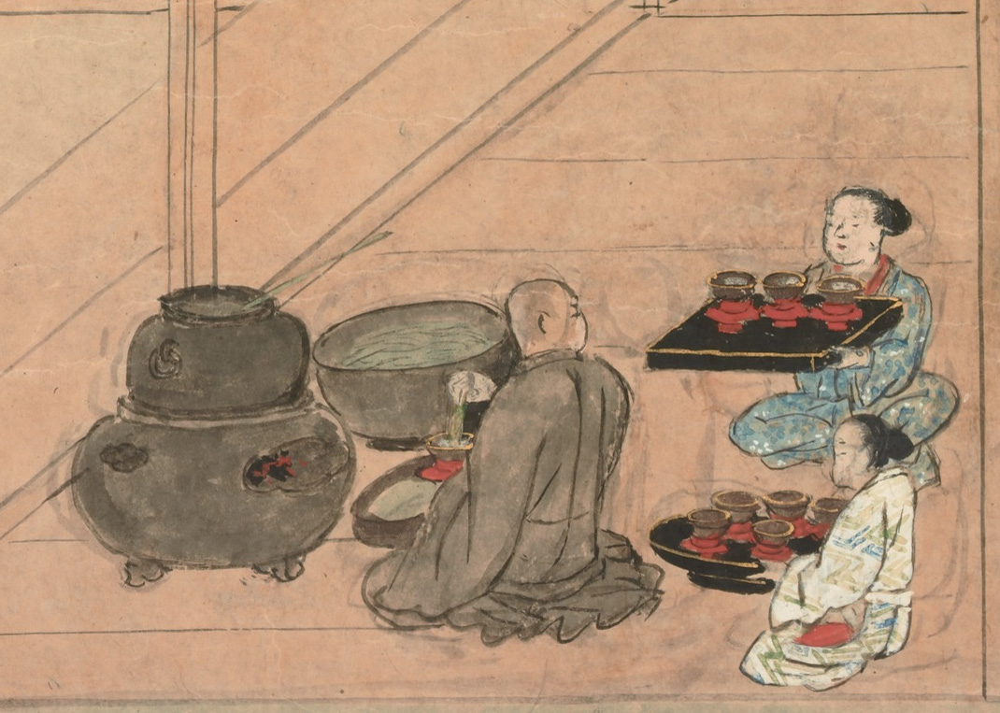
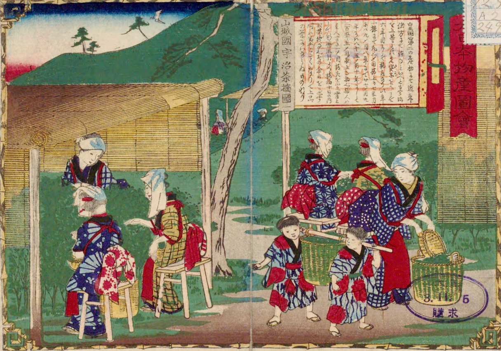

History
Origins in China
Powdered tea can be traced back to Tang dynasty China (618–907), where tea leaves were steamed and pressed into tea bricks for storage and trade. The leaves were then ground into powder and prepared with hot water. During the Song dynasty (960–1279), specialized equipment such as whisks and bowls emerged to prepare and froth a drink called mo cha, meaning "powdered tea."
The most famous references to powdered tea come from Cai Xiang's Record of Tea (1049–1053) and Emperor Huizong's Treatise on Tea (1107). These texts describe how high-grade compressed tea was ground into powder, sifted, placed in a bowl, mixed with hot water, and whisked. The ideal color at the time was considered white rather than green.
In the Ming dynasty, Emperor Zhu Yuanzhang banned the production of compressed tea in 1391, viewing its elaborate process as an unnecessary burden on the people. This decree effectively ended the tradition of powdered tea in China, and loose-leaf steeping became the new standard.
Introduction to Japan

The earliest documented reference to tea in Japan appears in the 9th century, concerning the Buddhist monk Eichū, who brought tea back from China. Zen Buddhist monks visiting China during the Song dynasty encountered mo cha and its preparation methods in Chinese temples.
One prominent monk was the Zen priest Eisai, who traveled to China around 1191. He authored the Kissa Yōjōki ("Book of Drinking Tea for Health") and presented it to the shōgun in 1214. At the time, tea was regarded as a form of medicine. The tea prepared then was a brownish-black lump, quite different from the bright green powder of modern matcha.
Eisai's disciple Myōe received tea seeds from Eisai and established plantations in Togano'o and Uji, Kyoto. Uji subsequently became Japan's foremost tea-producing region.
Refinement of Matcha
During the Muromachi period (1336–1573), Japanese tea farmers developed shading techniques to produce tencha, the tea leaves used for grinding into matcha. This innovation gave modern matcha its vivid green color and rich umami flavor, distinguishing it from earlier brown-colored powdered teas.
In the 14th century, specialized stone mills appeared for grinding tea, producing a much finer powder and greatly improving quality. Tea masters such as Murata Jukō and Sen no Rikyū emphasized simplicity, giving rise to the Japanese tea ceremony. The wabi-sabi aesthetic — finding beauty in modesty, simplicity, and imperfection — became closely associated with the practice.
Traditions

During the Edo period (1603–1867), Uji tea masters held exclusive rights to shaded cultivation and matcha production, guaranteed by the Tokugawa shogunate. They were divided into three ranks and held the status of samurai, dealing exclusively with the shōgun, the imperial court, and feudal lords.
The oldest known brand of matcha, Baba Mukashi ("Grandmother's Old Days"), was named after Myōshūni, who was skilled in tea preparation and whose tea was favored by Tokugawa Ieyasu himself.
The tradition of transporting tea jars from Uji to Edo for the shōgun, called Ochatsubo Dōchū ("Tea Jar Journey"), continued from 1633 until 1866. Even feudal lords were required to stand aside as the procession passed.
Modern Era
Following the Meiji Restoration in 1868, the feudal system was abolished and matcha's traditional clientele — the shōgun, lords, and nobles — disappeared. Shaded cultivation techniques gradually spread beyond Uji to other regions of Japan.
Technological advances such as the tencha dryer, invented during the Taishō to early Shōwa periods, improved production quality. Throughout the 20th century, matcha remained central to the Japanese tea ceremony, preserved by major tea schools such as Urasenke and Omotesenke.
Today, matcha has been adopted worldwide into lattes, desserts, and confections. Japan remains the center of traditional fine matcha, though China has become the world's largest producer by volume, exceeding 12,000 tons by 2025. Growing global demand has raised concerns about maintaining quality standards and the sustainability of traditional farming practices.